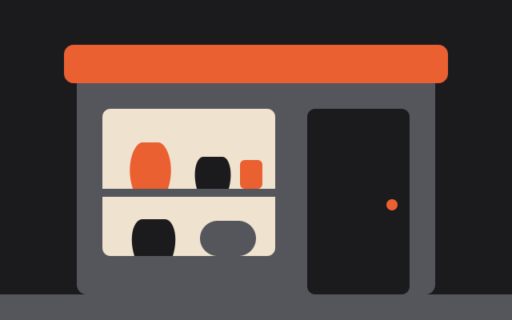

We make mugs, bowls and plates by hand at 14 Saddler Street, and we teach anyone who wants to learn.
Come in and say hello. The kettle is usually on.
Classes
Kofi teaches two classes a week, each for up to eight people.
-
Wheel throwing
Thursday evenings. Learn to centre clay on the wheel and throw mugs and bowls.
-
Handbuilding
Saturday mornings. Pinch, coil and slab your way to a set of plates, with no wheel.
Wear clothes you do not mind getting muddy.
What to bring:
- an apron or an old shirt
- a small towel
- a hair tie
- a bag for wet clay
Your first wheel class goes like this:
- Wedge the clay to push the air out.
- Centre it on the wheel.
- Open it up and pull up the walls.
- Cut it off the wheel and leave it to dry.
Times and prices are on the classes page.
The shop
Everything on our shelves was made here in the studio. Mugs, bowls and plates change with every firing, so come back often.
On the shelves this week:
-
Small mug
Holds one cup of tea. £18
-
Tall mug
For a long coffee or soup. £22
-
Cereal bowl
Deep enough for milk. £20
-
Serving bowl
Salad for six. £45
-
Side plate
Toast, cake, a pear. £16
-
Dinner plate
Wide, with a raised rim. £26
The kiln is opened on Friday nights, so the shelves are fullest on a Saturday.
Visit us
14 Saddler Street
Ostley
OS4 7RB
Open Tuesday to Saturday, 10am to 5pm.
Email hello@kilnworth.example or call 01632 960418.